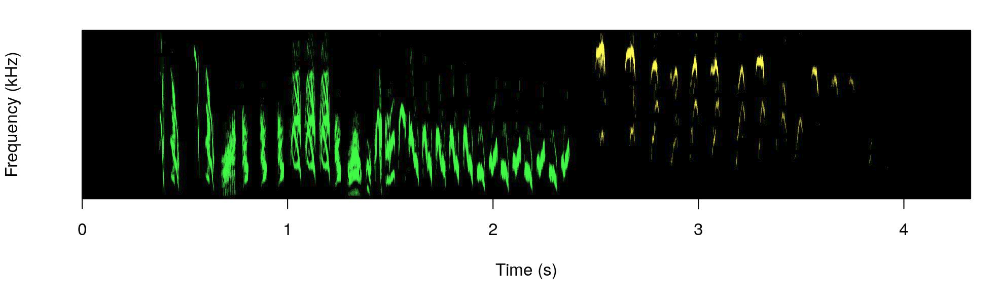
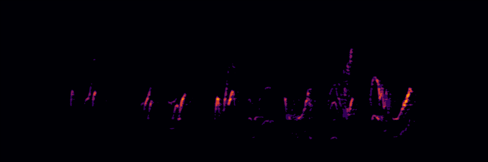
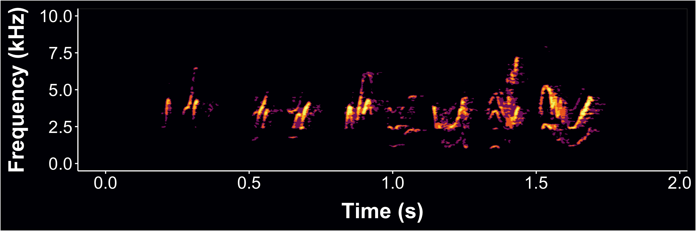

A set of tools to generate dynamic spectrogram visualizations in video format. FFMPEG must be installed in order for this package to work. The package relies heavily on the packages seewave and tuneR.
Please cite dynaSpec as follows:
Araya-Salas, Marcelo & Wilkins, Matthew R.. (2020), dynaSpec: dynamic spectrogram visualizations in R. R package version 1.0.0.
Install/load the package from CRAN as follows:
# From CRAN would be install.packages("dynaSpec") #load package library(dynaSpec) # and load other dependencies library(viridis) library(tuneR) library(seewave)
To install the latest developmental version from github you will need the R package devtools:
# From github devtools::install_github("maRce10/dynaSpec") #load package library(dynaSpec)
Background
This package is a collaboration between Marcelo Araya-Salas and Matt Wilkins. The goal is to create static and dynamic visualizations of sounds, ready for publication or presentation, without taking screen shots of another program. Marcelo’s approach (implemented in the scrolling_spectro() function) shows a spectrogram sliding past a fixed point as sounds are played, similar to that utilized in Cornell’s Macaulay Library of Sounds. These dynamic spectrograms are produced natively with base graphics. Matt’s approach creates “paged” spectrograms that are revealed by a sliding highlight box as sounds are played, akin to Adobe Audition’s spectral view. This approach is in ggplot2 natively, and requires setting up spec parameters and segmenting sound files with prep_static_ggspectro(), the result of which is processed with paged_spectro() to generate a dynamic spectrogram.
Marcelo’s Approach: “Scrolling Dynamic Spectrograms”
To run the following examples you will also need to load a few more packages as well as warbleR 1.1.24 (currently as the developmental version on github). It can be installed as follows:
# From github devtools::install_github("maRce10/warbleR") #load package library(warbleR)
A dynamic spectrogram of a canyon wren song with a viridis color palette:
data("canyon_wren") scrolling_spectro(wave = canyon_wren, wl = 300, t.display = 1.7, pal = viridis, grid = FALSE, flim = c(1, 9), width = 1000, height = 500, res = 120, file.name = "default.mp4")
Black and white spectrogram:
scrolling_spectro(wave = canyon_wren, wl = 300, t.display = 1.7, pal = reverse.gray.colors.1, grid = FALSE, flim = c(1, 9), width = 1000, height = 500, res = 120, file.name = "black_and_white.mp4", collevels = seq(-100, 0, 5))
A spectrogram with black background (colbg = “black”):
scrolling_spectro(wave = canyon_wren, wl = 300, t.display = 1.7, pal = viridis, grid = FALSE, flim = c(1, 9), width = 1000, height = 500, res = 120, file.name = "black.mp4", colbg = "black")
Slow down to 1/2 speed (speed = 0.5) with a oscillogram at the bottom (osc = TRUE):
scrolling_spectro(wave = canyon_wren, wl = 300, t.display = 1.7, pal = viridis, grid = FALSE, flim = c(1, 9), width = 1000, height = 500, res = 120, file.name = "slow.mp4", colbg = "black", speed = 0.5, osc = TRUE, colwave = "#31688E99")
Long-billed hermit song at 1/5 speed (speed = 0.5), removing axes and looping 3 times (loop = 3:
data("Phae.long4") scrolling_spectro(wave = Phae.long4, wl = 300, t.display = 1.7, ovlp = 90, pal = magma, grid = FALSE, flim = c(1, 10), width = 1000, height = 500, res = 120, collevels = seq(-50, 0, 5), file.name = "no_axis.mp4", colbg = "black", speed = 0.2, axis.type = "none", loop = 3)
Visualizing a northern nightingale wren recording from xeno-canto using a custom color palette:
ngh_wren <- read_wave("https://www.xeno-canto.org/518334/download") custom_pal <- colorRampPalette( c("#2d2d86", "#2d2d86", reverse.terrain.colors(10)[5:10])) scrolling_spectro(wave = ngh_wren, wl = 600, t.display = 3, ovlp = 95, pal = custom_pal, grid = FALSE, flim = c(2, 8), width = 700, height = 250, res = 100, collevels = seq(-40, 0, 5), file.name = "../nightingale_wren.mp4", colbg = "#2d2d86", lcol = "#FFFFFFE6")
Spix’s disc-winged bat inquiry call slow down (speed = 0.05):
data("thyroptera.est") # extract one call thy_wav <- attributes(thyroptera.est)$wave.objects[[12]] # add silence at both "sides"" thy_wav <- pastew(tuneR::silence(duration = 0.05, samp.rate = thy_wav@samp.rate, xunit = "time"), thy_wav, output = "Wave") thy_wav <- pastew(thy_wav, tuneR::silence(duration = 0.04, samp.rate = thy_wav@samp.rate, xunit = "time"), output = "Wave") scrolling_spectro(wave = thy_wav, wl = 400, t.display = 0.08, ovlp = 95, pal = inferno, grid = FALSE, flim = c(12, 37), width = 700, height = 250, res = 100, collevels = seq(-40, 0, 5), file.name = "thyroptera_osc.mp4", colbg = "black", lcol = "#FFFFFFE6", speed = 0.05, fps = 200, buffer = 0, loop = 4, lty = 1, osc = TRUE, colwave = inferno(10, alpha = 0.9)[3])
Further customization
The argument ‘spectro.call’ allows to insert customized spectrogram visualizations. For instance, the following code makes use of the color_spectro() function from warbleR to highlight vocalizations from male and female house wrens with different colors (after downloading the selection table and sound file from figshare):
# get house wren male female duet recording hs_wren <- read_wave("https://ndownloader.figshare.com/files/22722101") # and extended selection table st <- read.csv("https://ndownloader.figshare.com/files/22722404") # create color column st$colors <- c("green", "yellow") # highlight selections color.spectro(wave = hs_wren, wl = 200, ovlp = 95, flim = c(1, 13), collevels = seq(-55, 0, 5), dB = "B", X = st, col.clm = "colors", base.col = "black", t.mar = 0.07, f.mar = 0.1, strength = 3, interactive = NULL, bg.col = "black")

The male part is shown in green and the female part in yellow.
We can wrap the color_spectro() call using the call() function form base R and input that into scrolling_spectro() using the argument ‘spectro.call’:
# save call sp_cl <- call("color.spectro", wave = hs_wren, wl = 200, ovlp = 95, flim = c(1, 13), collevels = seq(-55, 0, 5), strength = 3, dB = "B", X = st, col.clm = "colors", base.col = "black", t.mar = 0.07, f.mar = 0.1, interactive = NULL, bg.col = "black") # create dynamic spectrogram scrolling_spectro(wave = hs_wren, wl = 512, t.display = 1.2, pal = reverse.gray.colors.1, grid = FALSE, flim = c(1, 13), loop = 3, width = 1000, height = 500, res = 120, collevels = seq(-100, 0, 1), spectro.call = sp_cl, fps = 60, file.name = "yellow_and_green.mp4")
This option can be mixed with any of the other customizations in the function, as adding an oscillogram:
# create dynamic spectrogram scrolling_spectro(wave = hs_wren, wl = 512, osc = TRUE, t.display = 1.2, pal = reverse.gray.colors.1, grid = FALSE, flim = c(1, 13), loop = 3, width = 1000, height = 500, res = 120, collevels = seq(-100, 0, 1), spectro.call = sp_cl, fps = 60, file.name = "yellow_and_green_oscillo.mp4")
A viridis color palette:
st$colors <- viridis(10)[c(3, 8)] sp_cl <- call("color.spectro", wave = hs_wren, wl = 200, ovlp = 95, flim = c(1, 13), collevels = seq(-55, 0, 5), dB = "B", X = st, col.clm = "colors", base.col = "white", t.mar = 0.07, f.mar = 0.1, strength = 3, interactive = NULL) # create dynamic spectrogram scrolling_spectro(wave = hs_wren, wl = 200, osc = TRUE, t.display = 1.2, pal = reverse.gray.colors.1, grid = FALSE, flim = c(1, 13), loop = 3, width = 1000, height = 500, res = 120, collevels = seq(-100, 0, 1), colwave = viridis(10)[c(9)], spectro.call = sp_cl, fps = 60, file.name = "viridis.mp4")
Or simply a gray scale:
st$colors <- c("gray", "gray49") sp_cl <- call("color.spectro", wave = hs_wren, wl = 200, ovlp = 95, flim = c(1, 13), collevels = seq(-55, 0, 5), dB = "B", X = st, col.clm = "colors", base.col = "white", t.mar = 0.07, f.mar = 0.1, strength = 3, interactive = NULL) # create dynamic spectrogram scrolling_spectro(wave = hs_wren, wl = 512, osc = TRUE, t.display = 1.2, pal = reverse.gray.colors.1, grid = FALSE, flim = c(1, 13), loop = 3, width = 1000, height = 500, res = 120, collevels = seq(-100, 0, 1), spectro.call = sp_cl, fps = 60, file.name = "gray.mp4")
The ‘spectro.call’ argument can also be used to add annotations. To do this we need to wrap up both the spectrogram function and the annotation functions (i.e. text(), lines()) in a single function and then save the call to that function:
# create color column st$colors <- viridis(10)[c(3, 8)] # create label column st$labels <- c("male", "female") # shrink end of second selection (purely aesthetics) st$end[2] <- 3.87 # function to highlight selections ann_fun <- function(wave, X){ # print spectrogram color.spectro(wave = wave, wl = 200, ovlp = 95, flim = c(1, 18.6), collevels = seq(-55, 0, 5), dB = "B", X = X, col.clm = "colors", base.col = "white", t.mar = 0.07, f.mar = 0.1, strength = 3, interactive = NULL) # annotate each selection in X for(e in 1:nrow(X)){ # label text(x = X$start[e] + ((X$end[e] - X$start[e]) / 2), y = 16.5, labels = X$labels[e], cex = 3.3, col = adjustcolor(X$colors[e], 0.6)) # line lines(x = c(X$start[e], X$end[e]), y = c(14.5, 14.5), lwd = 6, col = adjustcolor("gray50", 0.3)) } } # save call ann_cl <- call("ann_fun", wave = hs_wren, X = st) # create annotated dynamic spectrogram scrolling_spectro(wave = hs_wren, wl = 200, t.display = 1.2, grid = FALSE, flim = c(1, 18.6), loop = 3, width = 1000, height = 500, res = 200, collevels = seq(-100, 0, 1), speed = 0.5, spectro.call = ann_cl, fps = 120, file.name = "../viridis_annotated.mp4")
Finally, the argument ‘annotation.call’ can be used to add static labels (i.e. non-scrolling). It works similar to ‘spectro.call’, but requires a call from text(). This let users customize things as size, color, position, font, and additional arguments taken by text(). The call should also include the argmuents ‘start’ and ‘end’ to indicate the time at which the labels are displayed (in s). ‘fading’ is optional and allows fade-in and fade-out effects on labels (in s as well). The following code downloads a recording containing several frog species recorded in Costa Rica from figshare, cuts a clip including two species and labels it with a single label:
# read data from figshare frogs <- read_wave("https://ndownloader.figshare.com/files/22829075") # cut a couple of species shrt_frgs <- cutw(frogs, from = 35.3, to = 50.5, output = "Wave") # make annotation call ann_cll <- call("text", x = 0.25, y = 0.87, labels = "Frog calls", cex = 1, start = 0.2, end = 14, col = "#FFEA46CC", font = 3, fading = 0.6) # create dynamic spectro scrolling_spectro(wave = shrt_frgs, wl = 512, ovlp = 95, t.display = 1.1, pal = cividis, grid = FALSE, flim = c(0, 5.5), loop = 3, width = 1200, height = 550, res = 200, collevels = seq(-40, 0, 5), lcol = "#FFFFFFCC", colbg = "black", fps = 60, file.name = "../frogs.mp4", osc = TRUE, height.prop = c(3, 1), colwave = "#31688E", lty = 3, annotation.call = ann_cll)
The argument accepts more than one labels as in a regular text() call. In that case ‘start’ and ‘end’ values should be supplied for each label:
# make annotation call for 2 annotations ann_cll <- call("text", x = 0.25, y = 0.87, labels = c("Dendropsophus ebraccatus", "Eleutherodactylus coqui"), cex = 1, start = c(0.4, 7), end = c(5.5, 14.8), col = "#FFEA46CC", font = 3, fading = 0.6) # create dynamic spectro scrolling_spectro(wave = shrt_frgs, wl = 512, ovlp = 95, t.display = 1.1, pal = cividis, grid = FALSE, flim = c(0, 5.5), loop = 3, width = 1200, height = 550, res = 200, collevels = seq(-40, 0, 5), lcol = "#FFFFFFCC", colbg = "black", fps = 60, file.name = "../frogs_sp_labels.mp4", osc = TRUE, height.prop = c(3, 1),colwave = "#31688E", lty = 3, annotation.call = ann_cll)
Matt’s approach: “Paged Dynamic Spectrograms”
Workflow
- Tweak your spectrogram settings using the prep_static_ggspectro() function – aka prepStaticSpec() – storing results in variable. You can also just segment and export static specs at this step.
- Feed variable into paged_spectro() – aka pagedSpec() – to generate a dynamic spectrogram
- It does this by exporting a PNG of the testSpec() ggplot function;
- Import PNG as a new ggplot raster layer
- Overlay a series of translucent highlight boxes that disolve away using gganimate
Static spectrogram of a female barn swallow song

#let's add axes
femaleBarnSwallow<-prep_static_ggspectro(f[1],destFolder=tempdir(),savePNG=T,onlyPlotSpec = F)
Now brighten the spec using the ampTrans parameter
- ampTrans=3 is a nonlinear signal booster. Basically collapses the difference between loudest and quietest values (higher values= brighter specs); 1 (default) means no transformation
- Here, I also lowered the decibel threshold to include some quieter sounds with min_dB=-35; default is -30
- bgFlood=T makes the axis area the same color as the plot background. It will automatically switch to white axis font if background is too dark.
- Then generate dynamic spectrogram
#note that prep_static_spectro() is tha same as prepStaticSpec()
#Also paged_spectro() is the same as pagedSpec()
p2<-prepStaticSpec(f[1],min_dB=-35, savePNG=T, destFolder="wd",onlyPlotSpec=F,bgFlood=T,ampTrans=3)
pagedSpec(p2) 
Now also supports .mp3 files (web or local) and multi-page dynamic spectrograms (i.e. cropping and segmenting spectrograms from larger recording files)
- Long files may take a long time to render, depending on CPU power…
- the default is to not plot axes and labels (onlyPlotSpec=T)
- crop=12 is interpreted as: only use the first 12 seconds of the file; can also specify interval w/ c(0,12)
- xLim=3 specifies the “page window” i.e. how many seconds each “page” of the dynamic spectrogram should display, here 3 sec
- here we also limit the yLim of the plot to the vocalized frequencies from 0 to 700 Hz (0.7 kHz)
Example using Xeno-Canto to generate a multi-page dynamic spectrogram of a common nighthawk call (w/ different color scheme)
Nighthawk multipage dynamic spec
Enjoy! Please share your specs with us on Twitter! @M_Araya_Salas & @mattwilkinsbio
Please cite dynaSpec as follows:
Araya-Salas, Marcelo and Wilkins, Matthew R. (2020), dynaSpec: dynamic spectrogram visualizations in R. R package version 1.0.0.